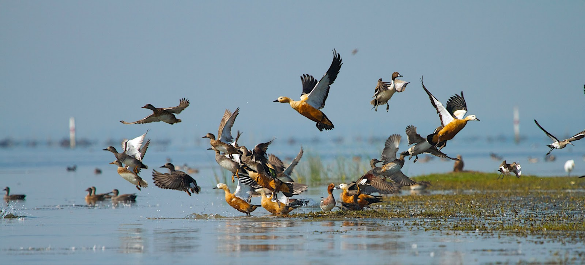
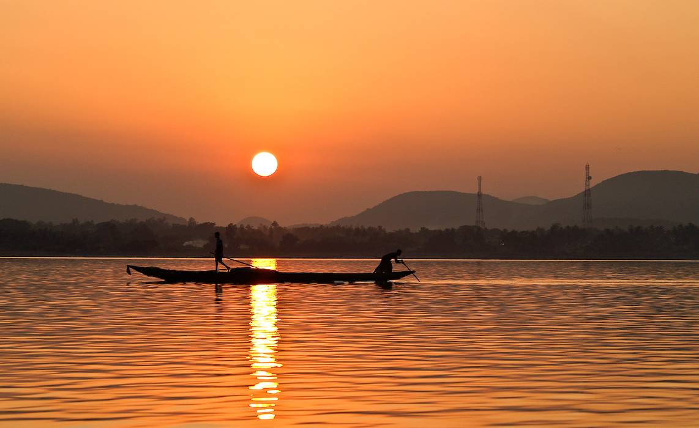
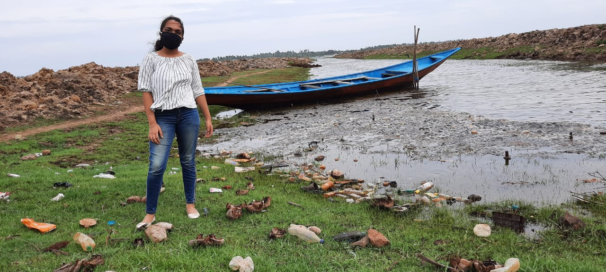
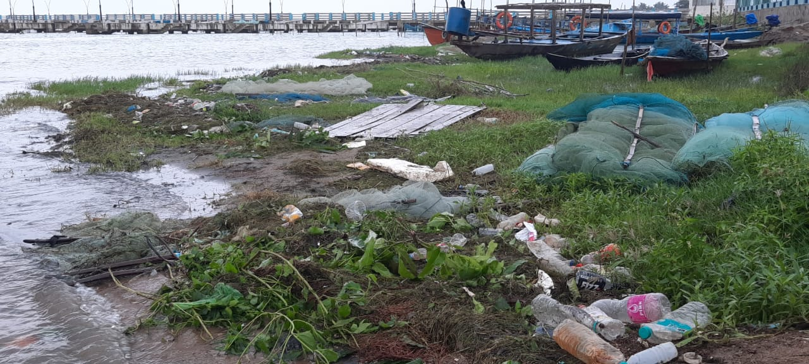

The Chilika Lake
The largest coastal lagoon of India and the second largest in the world, chilika spreads over 1100sq kms across three districts in the land of temples and tribal beauty, Odisha. It is also the largest brackish water lake with estuarine character in the world. Fed by over 52 rivers and rivulets, it opens at the Bay of Bengal 32km long channel. The largest winter hub of migratory birds in India, chilika attracts birds of over 160 species from every far-off land on this world including Russia, Mongolia, Siberia and the Himalayas.
Chilika shelters various endangered and rare species of insects, birds and animals including the famous Irrawaddy Dolphins that can only be found in chilika and are listed under IUCN as an endangered species. An extremely productive ecosystem and fishery ground, chilika provides as a source of income to more than 2 lakh local fishermen. Counted as a biodiversity hotspot in the world it was declared a ‘Ramsar Site’ (a wetland of international importance) by UNESCO for its rich biodiversity since 1981 and is a major tourist attraction for thousands of birdwatchers and nature lovers every year.
Chilika, the greatest brackish water lake in Asia, is gravely threatened by the enormous amount of garbage dumped on its shore on a daily basis. The state authorities had planned the use of plastic in 2002, yet concrete measures discourage tourists and locals from dumping plastic into the lake have not been implemented yet.
Chilika shelters various endangered and rare species of insects, birds and animals including the famous Irrawaddy Dolphins that can only be found in chilika and are listed under IUCN as an endangered species. An extremely productive ecosystem and fishery ground, chilika provides as a source of income to more than 2 lakh local fishermen. Counted as a biodiversity hotspot in the world it was declared a ‘Ramsar Site’ (a wetland of international importance) by UNESCO for its rich biodiversity since 1981 and is a major tourist attraction for thousands of birdwatchers and nature lovers every year.
However, the harmony of the delicate ecosystem of Chilika is being disturbed and endangered due to plastic and polythene bags. Around 147 villages, directly depend on the chilika for their daily bread, and this threat to the aquatic ecosystem threatens their survival too. Due to lack of efficient waste management plans and lack of awareness in the local community, the villagers end up dumping there waste into the lake. Furthermore, lakhs of tourist visit chilika everyday and they throw away their used polythenes, bottles, etc into the Chilika.
Important tourist spots such as Satapada, Mangalajodi, Kalijai, Barakula,to name a few, are slowly turning into dump yards of plastic due to irresponsible human activities.
The following pictures are actual pictures taken on-site


The time to act is now. We need to unite at all levels inorder to achieve the goal of #PlasticFreeChilika for one and for all.